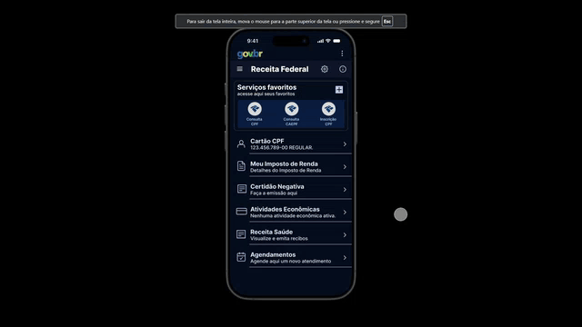
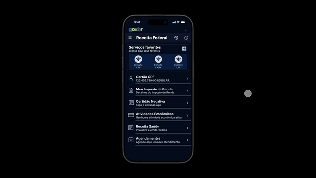
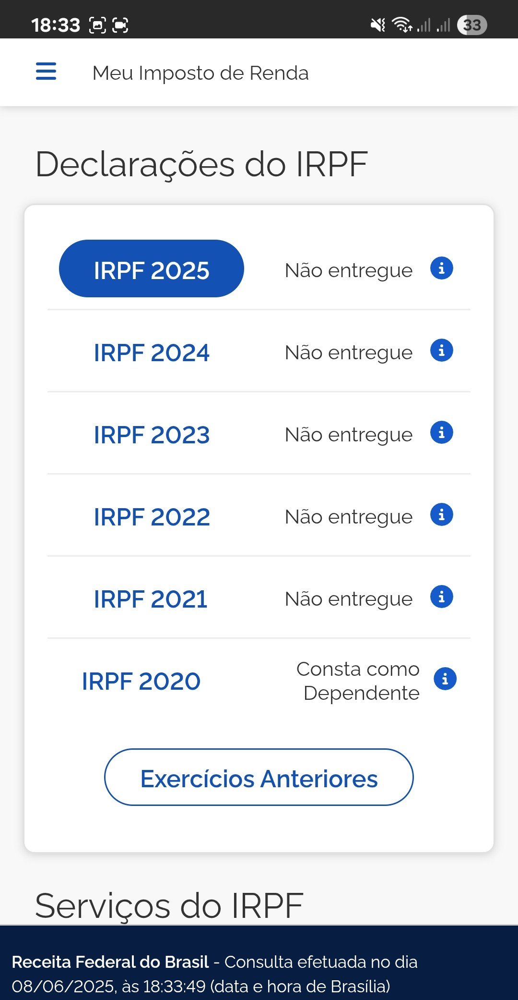

Pós-Rastreabilidade
Introdução
A pós-rastreabilidade desempenha um papel fundamental na verificação da conformidade entre os requisitos elicitados e os elementos que os representam nas fases subsequentes do desenvolvimento. Seu principal objetivo é garantir que cada requisito — funcional ou não funcional — tenha continuidade e seja refletido de forma clara na arquitetura, nos artefatos de projeto e futuramente na implementação do sistema.
Metodologia
Para estruturar a análise de pós-rastreabilidade no sistema da Receita Federal, foi adotado um modelo padronizado de cartão que organiza de forma sistemática os vínculos entre os requisitos e seus artefatos relacionados. Esse modelo permite rastrear a evolução dos requisitos a partir de suas fontes de origem até sua implementação, promovendo a transparência e a rastreabilidade entre as diversas fases do processo de engenharia de requisitos.
Tabela base dessa etapa é:
Tabela 1 - Template do cartão usado na pós-rastreabilidade
| Artefato Analisado | Classificação do Artefato Analisado |
|---|---|
| Descrição | Descrição do requisito |
| Tipos de Elo | Ambiental/Organizacional/Gerencial/Desenvolvimento |
| Código do req | RF e RNF/ |
| Backward-from | TIPO DE ELO (Origem) - US,C,L,USA, CON, DES, SUP, AC / INT, ADC, GDF, ST / NFRx, US, E |
| Foward-from | TIPO DE ELO (Relação) - Satisfação/agregação + descrição |
| Representação | Imagem ou vídeo |
Fonte: Seu nome aqui, 2025
Participação por membro da equipe
| Nome do membro | Elos do membro |
|---|---|
| José Eduardo | ----------------- |
| Diassis | ----------------- |
| Julia Massuda | ----------------- |
| Andre Lopes | ----------------- |
| João Pedro | ----------------- |
| Marco Marques | ----------------- |
Requisitos
RF02
Tabela 2 - Tabela 2 - Cartão Pós Rastreabilidade RF02
| Artefato Analisado | Classificação do Artefato Analisado |
|---|---|
| Descrição | Cadastro de CPF via app (totalmente remoto) |
| Tipos de Elo | Desenvolvimento |
| Código do req | RF02 |
| Backward-from | ADC2, US26, C01 |
| Foward-from | Agregação – Relacionado à etapa de inscrição Satisfação – Reduz burocracia para o usuário |
| Representação |
Fonte: Diassis, 2025.
RF03
Tabela 3 - Tabela 3 - Cartão Pós Rastreabilidade RF03
| Artefato Analisado | Classificação do Artefato Analisado |
|---|---|
| Descrição | Acompanhamento de status da restituição (precisão quanto aos lotes) |
| Tipos de Elo | Organizacional |
| Código do req | RF03 |
| Backward-from | ADC3, ST02, C04, L04, US01 |
| Foward-from | Agregação – Relacionado à etapa de restituição |
| Representação |  |
Fonte: Jose Eduardo, 2025.
RF05
Tabela 5 - Tabela 5 - Cartão Pós Rastreabilidade RF05
| Artefato Analisado | Classificação do Artefato Analisado |
|---|---|
| Descrição | Agendar no próprio aplicativo atendimentos presenciais em unidades da Receita Federal |
| Tipos de Elo | Organizacional |
| Código do req | RF05 |
| Backward-from | INT3, US02 |
| Foward-from | Integração – Sistemas de agendamento da Receita Satisfação – Facilidade de acesso aos serviços presenciais |
| Representação |  |
Fonte: Jose Eduardo, 2025.
RF07
Tabela 6 - Cartão Pós Rastreabilidade RF07
| Artefato Analisado | Classificação do Artefato Analisado |
|---|---|
| Descrição | O aplicativo deve fornecer uma agenda fiscal com lembretes para prazos de entrega de declarações. |
| Tipos de Elo | Desenvolvimento |
| Código do req | RF07 |
| Backward-from | US-04, C07, L07, UC-Configurar Lembretes Fiscais, E04, USA05, USA08 |
| Foward-from | Agregação – História de Usuário: US-04 - Gerenciamento de prazos fiscais; Feature: F04 - Agenda fiscal com lembretes Satisfação – Especificação Suplementar: USA05, USA08 |
| Representação | - |
Fonte: André Lopes, 2025.
RF10
Tabela 10 - Tabela 10 - Cartão Pós Rastreabilidade RF10
| Artefato Analisado | Classificação do Artefato Analisado |
|---|---|
| Descrição | Geração de guias de pagamento |
| Tipos de Elo | Desenvolvimento |
| Código do req | RF10 |
| Backward-from | ADC10, ST03, C07, L02, L08, US03, UC |
| Foward-from | Integração – Conectado ao sistema de arrecadação |
| Representação |  e e  |
Fonte: Jose Eduardo, 2025.
RF11
Tabela 11 - Tabela 11 - Cartão Pós Rastreabilidade RF11
| Artefato Analisado | Classificação do Artefato Analisado |
|---|---|
| Descrição | Consultar o status do CPF (ativo ou não) |
| Tipos de Elo | Organizacional |
| Código do req | RF11 |
| Backward-from | ADC11, ST06, C06, L01, US04 |
| Foward-from | Integração – Consulta em bases oficiais da Receita |
| Representação |
Fonte: Jose Eduardo, 2025.
RF12
Tabela 12 - Tabela 12 - Cartão Pós Rastreabilidade RF12
| Artefato Analisado | Classificação do Artefato Analisado |
|---|---|
| Descrição | Integração com conta Gov.br |
| Tipos de Elo | Desenvolvimento / Organizacional |
| Código do req | RF12 |
| Backward-from | ADC12, ST10, ENT04, US27 |
| Foward-from | Agregação – Integração com autenticação do sistema Satisfação – Facilita login com identidade digital |
| Representação | - |
Fonte: Diassis, 2025.
RF13
Tabela 13 - Tabela 13 - Cartão Pós Rastreabilidade RF13
| Artefato Analisado | Classificação do Artefato Analisado |
|---|---|
| Descrição | Envio de documentos para instrução de processos |
| Tipos de Elo | Desenvolvimento / Organizacional |
| Código do req | RF13 |
| Backward-from | ADC16, US28 |
| Foward-from | Agregação – Alocado no Módulo de Processos Satisfação – Evita deslocamentos físicos para entrega documental |
| Representação | - |
Fonte: Diassis, 2025.
RF14
Tabela 14 - Tabela 14 - Cartão Pós Rastreabilidade RF14
| Artefato Analisado | Classificação do Artefato Analisado |
|---|---|
| Descrição | Acessar informações detalhadas acerca da declaração de imposto de renda de um ano específico |
| Tipos de Elo | Organizacional |
| Código do req | RF14 |
| Backward-from | INT1, ENT03, L07, US05 |
| Foward-from | Agregação – Relacionado à análise de dados da declaração por período |
| Representação |  e |
Fonte: Jose Eduardo, 2025.
RF15
Tabela 15 - Tabela 15 - Cartão Pós Rastreabilidade RF15
| Artefato Analisado | Classificação do Artefato Analisado |
|---|---|
| Descrição | O aplicativo deve permitir o envio da declaração do IR |
| Tipos de Elo | Desenvolvimento / Organizacional |
| Código do req | RF15 |
| Backward-from | INT2,ENT01, US29, L03 |
| Foward-from | Agregação – Parte do Módulo de Declarações Satisfação – Simplifica o processo de declaração do IR |
| Representação |
Fonte: Diassis, 2025.
RF16
Tabela 16 - Tabela 16 - Cartão Pós Rastreabilidade RF16
| Artefato Analisado | Classificação do Artefato Analisado |
|---|---|
| Descrição | Mostrar histórico de envio das declarações pelo usuário |
| Tipos de Elo | Desenvolvimento / Gerencial |
| Código do req | RF16 |
| Backward-from | INT5, ST09, US30 |
| Foward-from | Agregação – Alocado no Módulo IR Satisfação – Usuário pode verificar rapidamente o histórico de suas declarações |
| Representação |
Fonte: Diassis, 2025.
RF17
Tabela 17 - Tabela 17 - Cartão Pós Rastreabilidade RF17
| Artefato Analisado | Classificação do Artefato Analisado |
|---|---|
| Descrição | Emissão de certidão negativa via aplicativo |
| Tipos de Elo | Organizacional |
| Código do req | RF17 |
| Backward-from | INT6, ENT02, L08, US06, UC |
| Foward-from | Integração – Conectado à base de débitos da Receita |
| Representação |
Fonte: Jose Eduardo, 2025.
RF18
Tabela 18 - Tabela 18 - Cartão Pós Rastreabilidade RF18
| Artefato Analisado | Classificação do Artefato Analisado |
|---|---|
| Descrição | Consulta de pendências de Malha Fiscal |
| Tipos de Elo | Desenvolvimento |
| Código do req | RF18 |
| Backward-from | US-31 UC: Consultar Situação Fiscal, UC: Acompanhar Processamento C04 E06 RNF20 USA06 |
| Foward-from | Agregação – Relacionada ao acompanhamento da declaração de IR Satisfação – Permite ao contribuinte verificar e resolver rapidamente inconsistências fiscais |
| Representação | Não aplicável |
Fonte: João Pedro, 2025.
RF19
Tabela 19 - Tabela 19 - Cartão Pós Rastreabilidade RF19
| Artefato Analisado | Classificação do Artefato Analisado |
|---|---|
| Descrição | O aplicativo possui um dashboard especializado que permite gerenciar múltiplos CPFs/CNPJs dos clientes. |
| Tipos de Elo | Desenvolvimento |
| Código do req | RF19 |
| Backward-from | US-18 C03 L09 UC: Relacionado a "Consultar Situação Fiscal", "Pagar Tributos", "Consultar Processos", "Acesso simultâneo a múltiplos CPFs/CNPJs" E05 RNF20, RNF21 USA06, CON05 |
| Foward-from | Satisfação: Especificação Suplementar: USA06, CON05 Agregação: História de Usuário: US-18 - Dashboard para profissionais contábeis; Feature: F21 - Dashboard para profissionais contábeis |
| Representação | Não aplicável |
Fonte: Julia Massuda, 2025.
RF21
Tabela 22 - Tabela 22 - Cartão Pós Rastreabilidade RF22 (US-33)
| Artefato Analisado | Classificação do Artefato Analisado |
|---|---|
| Descrição | Integração com eSocial |
| Tipos de Elo | Desenvolvimento |
| Código do req | RF21 |
| Backward-from | US-33 E07 |
| Foward-from | Agregação – Relacionada à integração com sistemas externos Satisfação – Facilita a gestão de informações trabalhistas e previdenciárias de forma integrada |
| Representação | Não aplicável |
Fonte: João Pedro, 2025.
RF22
Tabela 22 - Tabela 22 - Cartão Pós Rastreabilidade RF22 (US-34)
| Artefato Analisado | Classificação do Artefato Analisado |
|---|---|
| Descrição | Autorização de acesso a terceiros |
| Tipos de Elo | Desenvolvimento / Organizacional |
| Código do req | RF22 |
| Backward-from | US-34 C03 E07 RNF4 CON01 |
| Foward-from | Agregação – Relacionada à segurança e privacidade dos dados Satisfação – Permite que profissionais auxiliem contribuintes de forma remota |
| Representação | Não aplicável |
Fonte: João Pedro, 2025.
RF23
Tabela 23 - Tabela 23 - Cartão Pós Rastreabilidade RF23
| Artefato Analisado | Classificação do Artefato Analisado |
|---|---|
| Descrição | O aplicativo permite o compartilhamento de comprovantes e certidões diretamente pelo aplicativo através de WhatsApp, e-mail ou salvamento em nuvem. |
| Tipos de Elo | Desenvolvimento |
| Código do req | RF23 |
| Backward-from | US-13 C06 L06 UC: Consultar Recibo E02 RNF1, RNF20 USA01, USA06 |
| Foward-from | Satisfação: Especificação Suplementar: USA01, USA06 Agregação: História de Usuário: US-13 - Compartilhamento de comprovantes e certidões; Feature: F11 - Compartilhamento de comprovantes e certidões |
| Representação | Não aplicável |
Fonte: Julia Massuda, 2025.
RF24
Tabela 24 - Tabela 24 - Cartão Pós Rastreabilidade RF24
| Artefato Analisado | Classificação do Artefato Analisado |
|---|---|
| Descrição | O aplicativo permite o reenvio de notificações importantes que o usuário perdeu ou não recebeu. |
| Tipos de Elo | Desenvolvimento |
| Código do req | RF24 |
| Backward-from | US-14 UC: Relacionado a "Receber notificações da Receita" E04 |
| Foward-from | Agregação: História de Usuário: US-14 - Reenvio de notificações perdidas; Feature: F17 - Reenvio de notificações perdidas |
| Representação | Não aplicável |
Fonte: Julia Massuda, 2025.
RF26
Tabela 26 - Tabela 26 - Cartão Pós Rastreabilidade RF26
| Artefato Analisado | Classificação do Artefato Analisado |
|---|---|
| Descrição | O aplicativo permite acesso a um FAQ interativo com busca inteligente filtrada por temas. |
| Tipos de Elo | Desenvolvimento |
| Código do req | RF26 |
| Backward-from | US-16 C02 UC: Relacionado a "Acessar vídeos e notícias institucionais" e "Sistema de Ajuda e Documentação" E04 RNF1, RNF2 USA01, USA02 |
| Foward-from | Satisfação: Especificação Suplementar: USA01, USA02 Agregação: História de Usuário: US-16 - FAQ interativo com busca inteligente; Feature: F18 - FAQ interativo com busca inteligente |
| Representação | Não aplicável |
Fonte: Julia Massuda, 2025.
RF27
Tabela 27 - Tabela 27 - Cartão Pós Rastreabilidade RF27
| Artefato Analisado | Classificação do Artefato Analisado |
|---|---|
| Descrição | O aplicativo se integra automaticamente com o calendário do dispositivo para criar lembretes de obrigações fiscais. |
| Tipos de Elo | Desenvolvimento |
| Código do req | RF27 |
| Backward-from | US-17 UC: Relacionado a "Lembretes automáticos" (de Agendar Atendimento) E05 |
| Foward-from | Satisfação: Especificação Suplementar: Informação não disponível Agregação: História de Usuário: US-17 - Integração com calendário do dispositivo; Feature: F20 - Integração com calendário do dispositivo |
| Representação | Não aplicável |
Fonte: Julia Massuda, 2025.
RF29
Tabela 29 - Tabela 29 - Cartão Pós Rastreabilidade RF29
| Artefato Analisado | Classificação do Artefato Analisado |
|---|---|
| Descrição | Consulta de tabelas auxiliares (CNAE, NCM, unidades da RF) |
| Tipos de Elo | Desenvolvimento |
| Código do req | RF29 |
| Backward-from | US-35 E07 |
| Foward-from | Agregação – Relacionada à disponibilização de dados de referência Satisfação – Fornece informações técnicas essenciais para o preenchimento de documentos fiscais |
| Representação | Não aplicável |
Fonte: João Pedro, 2025.
RF30
Tabela 30 - Tabela 30 - Cartão Pós Rastreabilidade RF30
| Artefato Analisado | Classificação do Artefato Analisado |
|---|---|
| Descrição | Acesso à Caixa Postal oficial |
| Tipos de Elo | Desenvolvimento |
| Código do req | RF30 |
| Backward-from | US-36 UC: Relacionado a "Receber notificações da Receita" E07 |
| Foward-from | Agregação – Relacionada à comunicação oficial com o contribuinte Satisfação – Permite o recebimento e consulta segura de comunicações e documentos oficiais |
| Representação | Não aplicável |
Fonte: João Pedro, 2025.
RF32
Tabela 34 - Cartão Pós Rastreabilidade RF32
| Artefato Analisado | Classificação do Artefato Analisado |
|---|---|
| Descrição | O aplicativo deve permitir a integração com sistemas de pagamento para quitar débitos fiscais diretamente. |
| Tipos de Elo | Desenvolvimento |
| Código do req | RF32 |
| Backward-from | US-15, C10, L10, UC-Pagar Débitos Fiscais, E02, USA07, USA11 |
| Foward-from | Agregação – História de Usuário: US-15 - Pagamento de débitos fiscais; Feature: F12 - Integração com sistemas de pagamento Satisfação – Especificação Suplementar: USA07, USA11 |
| Representação | - |
Fonte: André Lopes, 2025.
RFN01
Tabela 35 - Tabela 35 - Cartão Pós Rastreabilidade RNF01
| Artefato Analisado | Classificação do Artefato Analisado |
|---|---|
| Descrição | Acessibilidade (chatbot, imagens, vídeos) — melhorias no chatbot |
| Tipos de Elo | Ambiental / Organizacional / Desenvolvimento |
| Código do req | RNF01 |
| Backward-from | ADC13 |
| Foward-from | Satisfação – Garante a acessibilidade de usuários com deficiência visual ou baixa escolaridade |
| Representação |
Fonte: Diassis
RFN02
Tabela 36 - Tabela 36 - Cartão Pós Rastreabilidade RNF02
| Artefato Analisado | Classificação do Artefato Analisado |
|---|---|
| Descrição | Conteúdo educativo para iniciantes |
| Tipos de Elo | Ambiental / Organizacional / Gerencial / Desenvolvimento |
| Código do req | RNF02 |
| Backward-from | ADC14 ST08 |
| Foward-from | Satisfação: Garante contúdo explicativo para pessoas iniciantes |
| Representação |
Fonte: Marco Marques
RFN03
Tabela 36 - Cartão Pós Rastreabilidade RNF03
| Artefato Analisado | Classificação do Artefato Analisado |
|---|---|
| Descrição | Testes de desempenho para suportar alta demanda de usuários simultâneos |
| Tipos de Elo | Desenvolvimento |
| Código do req | RNF03 |
| Backward-from | RNF03 DES01 ADC15 |
| Foward-from | Satisfação: Especificação Suplementar: DES01 (Testes de desempenho para suportar alta demanda de usuários simultâneos) Agregação: Informação não disponível |
| Representação | - |
Fonte: Julia Massuda, 2025.
RFN03
Tabela 37 - Cartão Pós Rastreabilidade RNF03
| Artefato Analisado | Classificação do Artefato Analisado |
|---|---|
| Descrição | Testes de desempenho para suportar alta demanda de usuários simultâneos |
| Tipos de Elo | Desenvolvimento |
| Código do req | RNF03 |
| Backward-from | RNF03 DES01 ADC15 |
| Foward-from | Satisfação: Especificação Suplementar: DES01 (Testes de desempenho para suportar alta demanda de usuários simultâneos) Agregação: Informação não disponível |
| Representação | - |
Fonte: Julia Massuda, 2025.
RFN04
Tabela 38 - Tabela 38 - Cartão Pós Rastreabilidade RNF04
| Artefato Analisado | Classificação do Artefato Analisado |
|---|---|
| Descrição | A compra deve ser feita em no máximo 5 páginas. |
| Tipos de Elo | Desenvolvimento |
| Código do req | RNF04 |
| Backward-from | NFR: RNF04 Especificação Suplementar: Informação não disponível. Requisitos Elicitados: Informação não disponível. |
| Foward-from | Satisfação: Garante um processo de compra rápido e simplificado para o usuário. Agregação: Informação não disponível |
| Representação | --- |
Fonte: João Pedro, 2025.
RFN05
Tabela 39 - Cartão Pós Rastreabilidade RNF05
| Artefato Analisado | Classificação do Artefato Analisado |
|---|---|
| Descrição | O sistema deve garantir a conformidade com as normas de acessibilidade, permitindo o uso por pessoas com deficiência visual, auditiva ou motora. |
| Tipos de Elo | Desenvolvimento |
| Código do req | RNF05 |
| Backward-from | US-01, C01, L01, UC-Navegação Acessível, E01, USA01 |
| Foward-from | Agregação – História de Usuário: US-01 - Acessibilidade para pessoas com deficiência; Feature: F01 - Suporte a acessibilidade Satisfação – Especificação Suplementar: USA01 |
| Representação | - |
Fonte: André Lopes, 2025.
RFN06
Tabela 40 - Tabela 40 - Cartão Pós Rastreabilidade RNF06
| Artefato Analisado | Classificação do Artefato Analisado |
|---|---|
| Descrição | Interface com a possibilidade de uso do modo escuro |
| Tipos de Elo | Ambiental / Desenvolvimento |
| Código do req | RNF06 |
| Backward-from | ADC23, INT17, ST11 |
| Foward-from | Satisfação – Melhora a experiência do usuário em ambientes com baixa luminosidade |
| Representação |
Fonte: Diassis
RFN07
Tabela 41 - Tabela 41 - Cartão Pós Rastreabilidade RNF07
| Artefato Analisado | Classificação do Artefato Analisado |
|---|---|
| Descrição | Testes de segurança para garantir a integridade dos dados e autenticação segura |
| Tipos de Elo | Ambiental / Organizacional / Gerencial / Desenvolvimento |
| Código do req | RNF07 |
| Backward-from | ADC19 |
| Foward-from | Satisfação: Garante testes para a segurança de dados |
| Representação |
Fonte: Marco Marques
RFN08
Tabela 42 - Cartão Pós Rastreabilidade RNF08
| Artefato Analisado | Classificação do Artefato Analisado |
|---|---|
| Descrição | Compatível com Android 8+ e iOS 14+ |
| Tipos de Elo | Desenvolvimento |
| Código do req | RNF08 |
| Backward-from | NFR: RNF08 Especificação Suplementar: SUP02 Requisitos Elicitados: ADC20 |
| Foward-from | Satisfação: Especificação Suplementar: SUP02 (Compatível com Android 8+ e iOS 14+) Agregação: Informação não disponível |
| Representação |  |
Fonte: Julia Massuda, 2025.
RFN09
Tabela 43 - Tabela 43 - Cartão Pós Rastreabilidade RNF09
| Artefato Analisado | Classificação do Artefato Analisado |
|---|---|
| Descrição | Testes de usabilidade semestrais com público 60+ |
| Tipos de Elo | Desenvolvimento |
| Código do req | RNF09 |
| Backward-from | NFR: RNF09 Especificação Suplementar: USA04 Requisitos Elicitados: ADC21 |
| Foward-from | Satisfação: Garante que o aplicativo seja acessível e fácil de usar para idosos. Agregação: Informação não disponível |
| Representação | --- |
Fonte: João Pedro, 2025.
RFN10
Tabela 44 - Tabela 44 - Cartão Pós Rastreabilidade RNF10
| Artefato Analisado | Classificação do Artefato Analisado |
|---|---|
| Descrição | O aplicativo deve ter tempo de resposta inferior a 3 segundos para ações comuns |
| Tipos de Elo | Ambiental / Organizacional / Gerencial / Desenvolvimento |
| Código do req | RNF10 |
| Backward-from | INT9 |
| Foward-from | |
| Representação |
Fonte:
RFN11
Tabela 45 - Tabela 45 - Cartão Pós Rastreabilidade RNF11
| Artefato Analisado | Classificação do Artefato Analisado |
|---|---|
| Descrição | O aplicativo deve funcionar em smartphones com telas de 4.5" a 7" sem perda de usabilidade |
| Tipos de Elo | Ambiental / Desenvolvimento |
| Código do req | RNF11 |
| Tipos de Elo | Desenvolvimento |
| Código do req | RNF11 |
| Backward-from | US-09, C05, L05, UC-Interface Adaptável, E05, USA05 |
| Foward-from | Agregação – História de Usuário: US-09 - Interface responsiva; Feature: F09 - Interface adaptável a dispositivos Satisfação – Especificação Suplementar: USA05 |
| Representação | - |
Fonte: André Lopes, 2025.
RFN12
Tabela 46 - Tabela 46 - Cartão Pós Rastreabilidade RNF12
| Artefato Analisado | Classificação do Artefato Analisado |
|---|---|
| Descrição | Linguagem da interface deve seguir padrão A2 do CEFR, evitando jargões técnicos |
| Tipos de Elo | Ambiental / Organizacional / Gerencial / Desenvolvimento |
| Código do req | RNF12 |
| Backward-from | ADC25 |
| Foward-from | Satisfação: Garante uma linguagem para todos os públicos |
| Representação |
Fonte: Marco Marques
RFN13
Tabela 47 - Cartão Pós Rastreabilidade RNF13
| Artefato Analisado | Classificação do Artefato Analisado |
|---|---|
| Descrição | O app deve suportar modo de operação em baixa conectividade, com cache de dados essenciais |
| Tipos de Elo | Desenvolvimento |
| Código do req | RNF13 |
| Backward-from | RNF13 DES03 INT11 |
| Foward-from | Satisfação: Especificação Suplementar: DES03 (Suporte offline com cache de dados essenciais em baixa conectividade) Agregação: Informação não disponível |
| Representação | Não aplicável |
Fonte: Julia Massuda, 2025.
RFN14
Tabela 48 - Cartão Pós Rastreabilidade RNF14
| Artefato Analisado | Classificação do Artefato Analisado |
|---|---|
| Descrição | Atualizações do app não devem causar perda de dados armazenados localmente |
| Tipos de Elo | Desenvolvimento |
| Código do req | RNF14 |
| Backward-from | NFR: RNF14 Especificação Suplementar: CON03 Requisitos Elicitados: INT12 |
| Foward-from | Satisfação: Garante a integridade e a segurança dos dados do usuário. Agregação: Informação não disponível |
| Representação | --- |
Fonte: João Pedro, 2025.
RFN15
Tabela 49 - Tabela 49 - Cartão Pós Rastreabilidade RNF15
| Artefato Analisado | Classificação do Artefato Analisado |
|---|---|
| Descrição | Tempo de inatividade programada máximo de 2h por mês, com aviso prévio |
| Tipos de Elo | Ambiental / Organizacional / Gerencial / Desenvolvimento |
| Código do req | RNF15 |
| Backward-from | INT13 |
| Foward-from | |
| Representação |
Fonte:
RFN16
Tabela 50 - Tabela 50 - Cartão Pós Rastreabilidade RNF16
| Artefato Analisado | Classificação do Artefato Analisado |
|---|---|
| Descrição | Tempo de carregamento inicial do app não deve ultrapassar 5 segundos em conexão móvel |
| Tipos de Elo | Ambiental / Desenvolvimento / Gerencial |
| Código do req | RNF16 |
| Backward-from | ADC24 |
| Foward-from | Satisfação – Melhora a experiência inicial e reduz evasão no uso do app |
| Representação | US32 |
Fonte: Diassis
RFN17
Tabela 51 - Tabela 51 - Cartão Pós Rastreabilidade RNF17
| Artefato Analisado | Classificação do Artefato Analisado |
|---|---|
| Descrição | Suporte a leitores de tela (TalkBack, VoiceOver) em todas as funcionalidades |
| Tipos de Elo | Ambiental / Organizacional / Gerencial / Desenvolvimento |
| Código do req | RNF17 |
| Backward-from | INT14 ADC22 |
| Foward-from | Satisfação: Fornece suporte para leitura |
| Representação |
Fonte:
RFN18
Tabela 52 - Cartão Pós Rastreabilidade RNF18
| Artefato Analisado | Classificação do Artefato Analisado |
|---|---|
| Descrição | Armazenamento anônimo de logs de erro respeitando a LGPD |
| Tipos de Elo | Desenvolvimento / Organizacional |
| Código do req | RNF18 |
| Backward-from | RNF18 CON04 INT15 |
| Foward-from | Satisfação: Especificação Suplementar: CON04 (Armazenamento anônimo de logs de erro respeitando a LGPD) Agregação: Informação não disponível |
| Representação | - |
Fonte: Julia Massuda, 2025.
RFN19
Tabela 53 - Tabela 53 - Cartão Pós Rastreabilidade RNF19
| Artefato Analisado | Classificação do Artefato Analisado |
|---|---|
| Descrição | Versão mínima em HTML5 responsiva para acesso via navegador em caso de falha do app |
| Tipos de Elo | Desenvolvimento |
| Código do req | RNF19 |
| Backward-from | NFR: RNF19 Especificação Suplementar: SUP04 Requisitos Elicitados: INT16 |
| Foward-from | Satisfação: Garante a continuidade do acesso aos serviços em caso de falha do aplicativo nativo. Agregação: Informação não disponível |
| Representação | --- |
Fonte: João Pedro, 2025.
RFN20
Tabela 54 - Cartão Pós Rastreabilidade RNF20
| Artefato Analisado | Classificação do Artefato Analisado |
|---|---|
| Descrição | Clareza na apresentação de dados fiscais |
| Tipos de Elo | Desenvolvimento |
| Código do req | RNF20 |
| Backward-from | US-13, C06, L06, UC-Consultar Recibo, E02, USA06 |
| Foward-from | Agregação – História de Usuário: US-13 - Compartilhamento de comprovantes e certidões; Feature: F11 - Compartilhamento de comprovantes e certidões Satisfação – Especificação Suplementar: USA06 |
| Representação | - |
Fonte: André Lopes, 2025.
RFN21
Tabela 55 - Tabela 21 - Cartão Pós Rastreabilidade RNF21
| Artefato Analisado | Classificação do Artefato Analisado |
|---|---|
| Descrição | Integração confiável com serviços externos (Gov.br, instituições financeiras) |
| Tipos de Elo | Organizacional / Desenvolvimento |
| Código do req | RNF21 |
| Backward-from | ST13, ENT05, US39 |
| Foward-from | Agregação – Interoperabilidade entre Receita Federal e serviços federais |
| Representação | - |
Fonte: Diassis
Referências
1. SAYÃO, Miriam; LEITE, Julio. Rastreabilidade de Requisitos. PUC-Rio: Departamento de Informática, ISSN 0103-9741, Rio de Janeiro, 2005. Disponível em: https://www-di.inf.puc-rio.br/~julio/rastre.pdf.
2. SERRANO, Milene; SERRANO, Maurício. Requisitos – Aula 26. Universidade de Brasília, Campus Gama (UnB Gama). Material de aula.
Histórico de Versões
| Versão | Data | Descrição | Autor(es) | Revisor(es) |
|---|---|---|---|---|
1.0 |
05/06/2025 | Criação do documento de pós rastreabilidade | José Eduardo | Diassis |
1.1 |
08/06/2025 | Criação do cartão de referencia | José Eduardo | Diassis |
1.2 |
08/06/2025 | Criação dos cartões RF02, RF12, RF13, RF15, RF16, RF20 e RNF01, RNF06, RNF11, RNF16 e RNF21 | Diassis | José Eduardo |
1.3 |
08/06/2025 | Criação dos cartões RF03, RF05, RF10, RF11, RF14 e RF17 e RNF01, RNF06, RNF11, RNF16 e RNF21 | José Eduardo | Diassis |
1.4 |
08/06/2025 | Criação dos cartões RF03, RF05, RF10, RF11, RF14 e RF17 e RNF01, RNF06, RNF11, RNF16 e RNF21 | Diassis | José Eduardo |
1.5 |
08/06/2025 | Criação dos cartões RF23, RF24, RF26, RF27, RF19, RNF03, RNF08, RNF13 e RNF18 | Julia Massuda | Diassis |
1.6 |
08/06/2025 | Criação introdução e metodologia da pos-rastreabilidade | José Eduardo | Diassis |
1.7 |
08/06/2025 | Criação dos cartões RF18, RF22, RF22, RF29, RF30, RNF04, RNF09, RNF14 e RNF19 | João Pedro | José Eduardo |
1.8 |
08/06/2025 | Adicionando as referências | José Eduardo | Diassis |
1.9 |
08/06/2025 | Criação dos cartões RNF02, RNF07, RNF12 e RNF17 | Marco Marques | José Eduardo |
2.0 |
20/06/2025 | Adicionando hyperlinks que faltaram | José Eduardo | João Pedro |